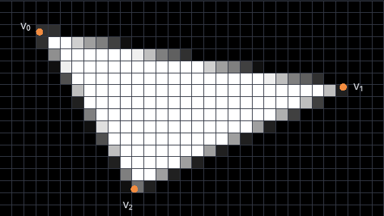
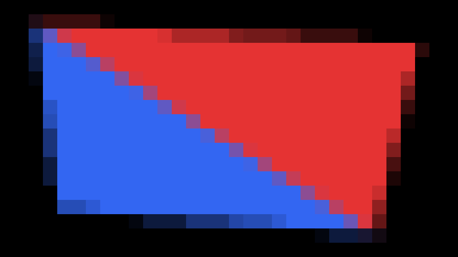
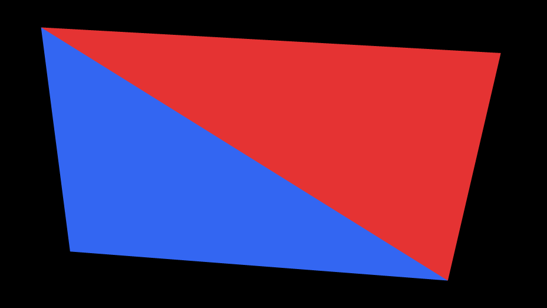

Kapitel 3
Antialiasing
# Aliasing beim Rasterisieren
Die Dreiecksrasterisierung tastet ein Dreieck nur an den Pixelzentren ab (Übung „Dreiecksrasterisierung“): Liegt das Pixelzentrum im Dreieck, bekommt das Pixel die Farbe des Dreiecks, sonst bleibt es, wie es ist. Ein Pixel gehört also ganz oder gar nicht zum Dreieck, egal wie viel seiner Fläche das Dreieck bedeckt. Das Abtasten nur am Pixelzentrum ist eine Abtastung, das Ganz-oder-gar-nicht eine Quantisierung, und aus beiden entsteht Aliasing (Kapitel 3, Rasterisierung – Aliasing): Das Bild auf dem Raster weicht vom Dreieck ab, und zwar umso stärker, je gröber das Raster ist. Verfahren, die diese Aliasing-Artefakte verringern, heißen Antialiasing.
Die Demo rasterisiert ein weißes Dreieck in ein Raster aus Pixeln. Die Punkte sind die Pixelzentren, die Linie ist der genaue Umriss. „Dreieck“ wählt ein großes oder ein schmales Dreieck, die Eckpunkte (vertices) lassen sich rechts eingeben oder mit der Maus ziehen, und „Verschiebung“ schiebt das Dreieck nach rechts. Rechts stehen die Zahl der gesetzten Pixel und die Fläche des Dreiecks in Pixeln.
Aufgabe 1: Ein Sample pro Pixel
- Ziehe „Verschiebung“ langsam von 0 bis 1 und beobachte ein Pixel an der Kante zwischen und . In welchem Moment wechselt es zwischen Schwarz und Weiß?
- Wähle „Schmal“ und ziehe „Verschiebung“ noch einmal. Wie weit weicht „Gesetzte Pixel“ dabei von „Fläche“ ab?
- Warum zerfällt das schmale Dreieck in einzelne Stücke, obwohl es zusammenhängt?
# Supersampling
Supersampling tastet jedes Pixel an mehreren Stellen ab. Mit Samples pro Pixel liegen die Samples von Pixel auf einem regelmäßigen Gitter:
Das sind genau die Pixelzentren eines Rasters, das in jeder Richtung -mal so fein ist. Die GPU kann das Dreieck also wie gewohnt in ein Raster aus Pixeln rasterisieren. Danach bekommt jedes Pixel des eigentlichen Rasters den Mittelwert seiner Samples. Das ist ein Box-Filter über die Samples (Kapitel 2, Bildfaltung – Glättung); anders als dort wird jeder Block aus Samples zu einem einzigen Pixel des groben Rasters. Mit bleibt nur das Pixelzentrum, wie ohne Supersampling. Mit Samples läuft der Fragment-Shader des Dreiecks etwa -mal so oft.
Die Demo rasterisiert dasselbe Dreieck mit Samples pro Pixel. „Samples“ zeigt die Samples, weiß im Dreieck und grau außerhalb, und darüber das Gitter der Pixel; „Ergebnis“ zeigt das Raster, das resolve.frag daraus schreibt. Rechts stehen das Pixel, über dem die Maus zuletzt war, wie viele seiner Samples im Dreieck liegen und seine Bytes im Ergebnis.
Aufgabe 2: Mehrere Samples pro Pixel
- Wähle „Samples“ und , zeige mit der Maus auf ein Pixel an der Kante zwischen und und ziehe „Verschiebung“ langsam von 0 bis 1. Wie ändert sich die Zahl seiner Samples im Dreieck?
- Wie viele verschiedene Intensitäten kann ein Pixel mit Samples bekommen, wenn ein weißes Dreieck auf schwarzem Hintergrund liegt?
- Welchem Wert nähert sich der Anteil der Samples eines Pixels, die im Dreieck liegen, wenn wächst?
Aufgabe 3: Mittelwert der Samples
Die Demo rasterisiert das Dreieck in eine Textur samples mit Texeln pro Pixel. Der Fragment-Shader resolve.frag (src/supersampling/resolve.frag) läuft einmal für jedes Pixel des Rasters und nimmt bisher nur ein Sample.
Ändere resolve.frag so, dass jedes Pixel den Mittelwert seiner Samples bekommt.
- Wähle „Ergebnis“ und ziehe „Verschiebung“ einmal mit und einmal mit . Wie bewegen sich die Kanten jeweils?
- Wähle „Schmal“ und ziehe „Verschiebung“ mit . Was wird aus den einzelnen Stücken aus der Aufgabe „Ein Sample pro Pixel“?
- Wähle „Samples“ und schau dir das schmale Dreieck nahe an. Wo bedeckt es Teile eines Pixels, ohne eines seiner Samples zu treffen, und warum?
Mögliche Lösung anzeigen

# Multisampling
Supersampling führt den Fragment-Shader für jedes Sample aus. Die GPU bietet ein günstigeres Verfahren an, das Multisampling (MSAA). Es testet wie das Supersampling für mehrere Samples pro Pixel, ob sie im Dreieck liegen, führt den Fragment-Shader aber nur einmal pro Pixel und Dreieck aus, am Pixelzentrum, und schreibt seine Farbe in alle Samples des Pixels, die im Dreieck liegen. Danach bekommt jedes Pixel den Mittelwert seiner Samples. Wo die Samples im Pixel liegen, legt die GPU fest.
In der Rendering-Pipeline (Kapitel 3, OpenGL Rendering Pipeline) unterscheiden sich die drei Verfahren erst ab der Rasterisierung:
| Stufe | 1 Sample | MSAA | Supersampling |
|---|---|---|---|
| Vertex Shader | einmal pro Eckpunkt | einmal pro Eckpunkt | einmal pro Eckpunkt |
| Rasterisierung (Triangle Traversal) | testet das Pixelzentrum | testet jedes Sample | testet jedes Sample als Pixelzentrum eines -mal so feinen Rasters |
| Fragment Shader | einmal pro Pixel und Dreieck | einmal pro Pixel und Dreieck, am Pixelzentrum | einmal pro Sample |
| Per-Fragment Operations (Merging) | schreibt ein Pixel | schreibt die Farbe in alle Samples im Dreieck | schreibt ein Sample |
| Danach | – | eine Framebufferoperation bildet den Mittelwert jedes Pixels | ein eigener Durchgang bildet den Mittelwert jedes Pixels, in der Demo resolve.frag |
Die Demo zeichnet zwei gleich dünne Linien mit einem Sample pro Pixel, mit MSAA und mit Supersampling. Die obere ist ein schmales Rechteck aus zwei Dreiecken. Die untere berechnet der Fragment-Shader eines Dreiecks, das das ganze Raster bedeckt: Er färbt ein Fragment weiß, wenn es nah genug an der Linie liegt. Für das Supersampling nimmt die Demo das gespeicherte resolve.frag aus der Aufgabe „Mittelwert der Samples“; solange es nur ein Sample nimmt, zeigt auch „Supersampling“ nur ein Sample pro Pixel. Hinter den Namen der oberen Reihe steht, wie oft der Fragment-Shader läuft. Die untere Reihe zeigt dasselbe in voller Auflösung, mit einem Pixel des Bildes pro Pixel des Bildschirms; „Linienbreite“ zählt in Pixeln des jeweiligen Bildes. „Samples pro Pixel“ gilt für MSAA und Supersampling: 4 heißt , 16 heißt .
Aufgabe 4: Multisampling und Supersampling
- Schalte „Animieren“ ein und beobachte die obere Linie. Warum hängt sie bei MSAA und bei Supersampling zusammen, bei „1 Sample“ aber nicht?
- Beobachte jetzt die untere Linie. Warum zerfällt sie bei MSAA wie bei „1 Sample“, bei Supersampling aber nicht?
- Stelle „Linienbreite“ auf 2. Wie unterscheiden sich bei MSAA die Ränder der beiden Linien?
- Wann reicht MSAA, und wann braucht man Supersampling?
# Eigene Umsetzung
Aufgabe 5: Supersampling auf der CPU
Schreibe ein Programm, das Dreiecke auf der CPU mit Edge Function Testing rasterisiert und mit Supersampling glättet. Rufe deinen Code aus start (src/solution/index.ts) auf; das Ergebnis erscheint in der Demo unter dieser Aufgabe.
Das Ergebnis soll zwei verschiedenfarbige Dreiecke mit einer gemeinsamen Kante auf schwarzem Hintergrund zeigen, auf einem Raster, dessen Pixel man einzeln erkennt. Die Eckpunkte und sollen sich einstellen lassen, und die Samples liegen wie oben auf einem regelmäßigen Gitter. Dafür brauchst du aus Kapitel 3 das Edge Function Testing mit der Top-Left-Konvention und aus Kapitel 2 den Box-Filter.
- Welche Farben bekommen die Pixel auf der gemeinsamen Kante, und wie entstehen sie?
- Lege die gemeinsame Kante von nach , so dass viele Samples genau auf ihr liegen. Zähle probeweise ein Sample, an dem eine Edge Function 0 ist, zu keinem der beiden Dreiecke. Was siehst du auf der Kante, und warum? Stelle danach deine Regel wieder her.
Mögliche Lösung anzeigen


Aufgabe 6: Andere Abtastmuster (optional)
Probiere andere Anordnungen und Gewichte der Samples aus und vergleiche die Kanten mit dem regelmäßigen Gitter. Ideen: ein gedrehtes Gitter, zufällige Stellen in jedem Pixel, Gewichte wie beim Gauss-Filter aus Kapitel 2, oder ein Fächer aus vielen schmalen Dreiecken, an dem auch Supersampling an seine Grenzen kommt.